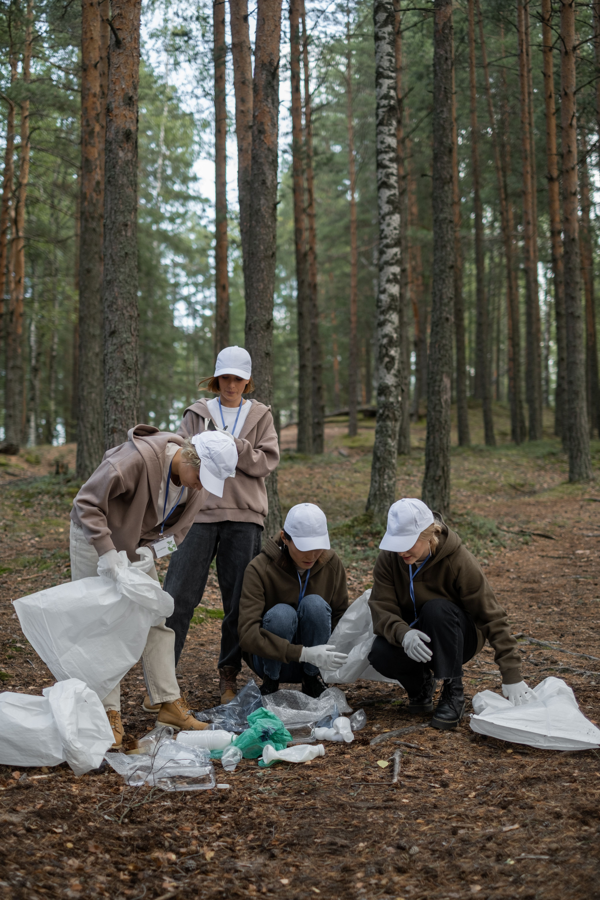
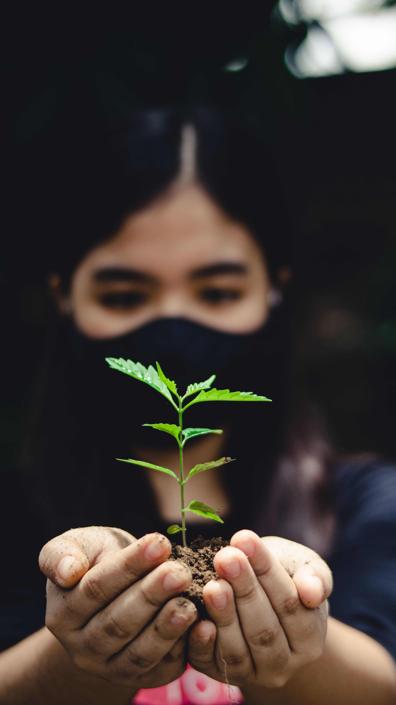
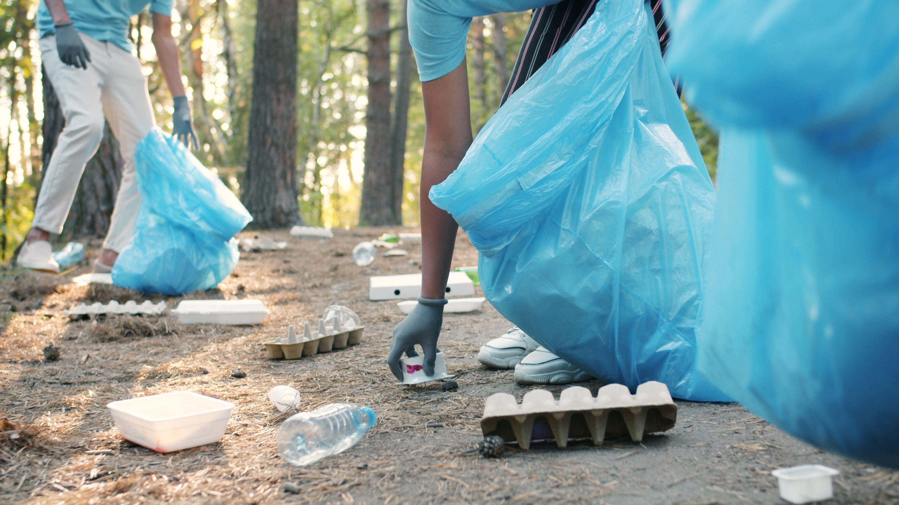
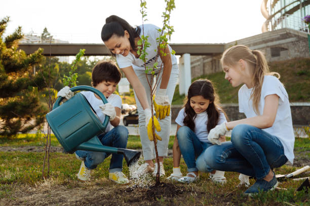
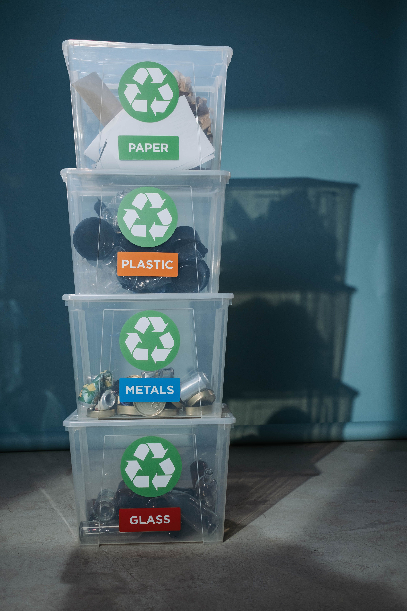
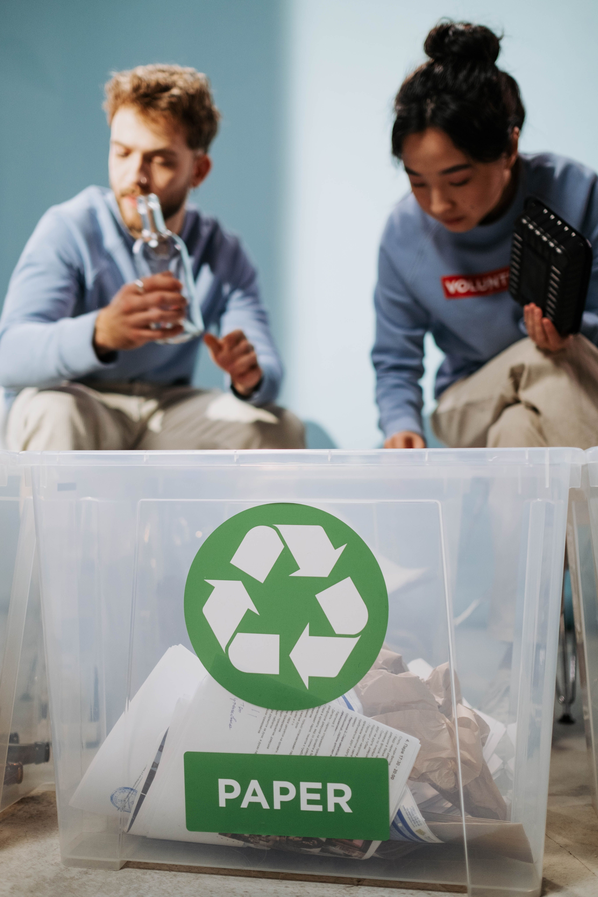
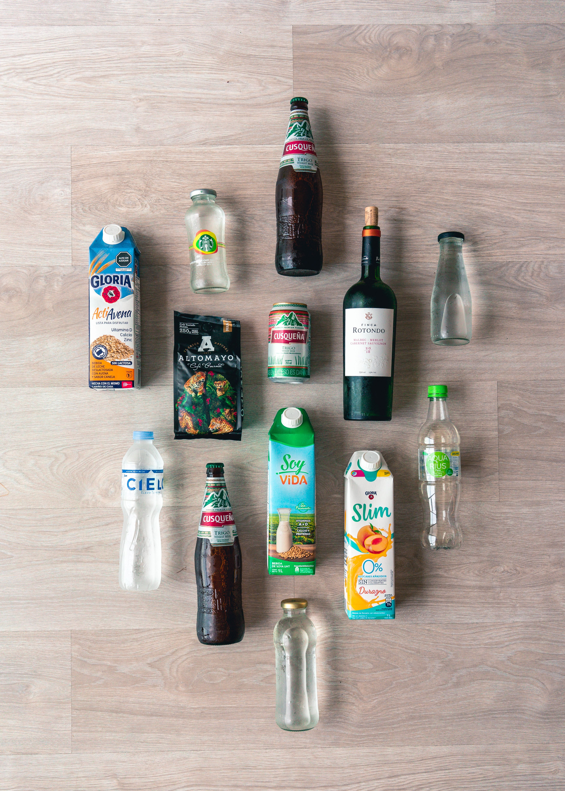
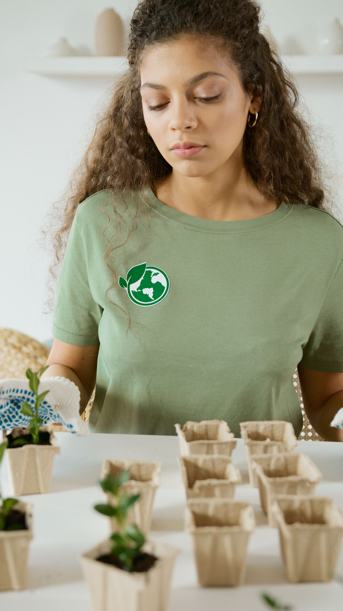

Somos una organización dedicada al rescate y cuidado del mundo ayudadndo a reducir, reutilizar y reciclar productos de nuestra vida diaria. Al igual de que creamos y apoyamos proyectos dedicados apoyar a comunidades en todo el pais.
Bienvenido
Aún tenemos tiempo, juntos podemos transformar nuestras socidedas y salvar nuestro medio ambiente
Fundación
Conoce a nuestros perritos

En un municipio lleno de basura como Tepentongo en el estado de Zacatecas, unos estudiantes de la preparatoria local Escuela Preparatoria Estatal Profr. Salvador Vidal García se han propuesto a limpiar su bosque local liderados por Jose.

En el pueblo de San Antonio Tecómitl, dentro de la alcaldía Milpa Alta en la Ciudad de México, las personas se han vuelto descuidadas con sus entornos naturales. Es por esta razon que Maria Jose, una vendedora esquites local, a comenzado un pequeño programa de reforestación.

En el municipio de Heroica Ciudad de Huajuapan de León, principal núcleo de la región Mixteca de Oaxaca, hay un porblema con los cartones de huevo, Joseph esta para solucionarlo.

Coatepec, conocido como la capital del café y Pueblo Mágico en el estado de Veracruz podra tener muchi turimo, pero sufre de algunas sequias recientes, por eso Max a comenzado un programa de regado y cuidado de planta junto a su madre.

Recuerdas a la muñeca poseida que tenia que ser resguardada por el gran peligro que representaba? Pues tu puedes hacer lo mismo, uniéndote a nuestro curso, con algo todavia más peligroso, los residuos resiclabes y reutilizables que usas todos los dias.

En volver al futuro usaban el delorian para cambiar el pasado y así, tener un mejor futuro, nuestro curso hace lo mismo cambiando nuestor presente. Únete a nuestro curso de reciclaje y aprende a mejorar tus habitos.

En los juegos del hambre cada distrito se clasifica de distintas y especificas maneras, para separarlos uno del otro. En nuestro curso, aprenderas a clasificar algo que es casi tan complejo, tu basura andes de desacharla.

Es decir, vamos...todos sabemos lo que paso en Wall-e. Únete a nuestro curso para aprender como crear y mantenr pequeños huertos sustentables en tu hogar.